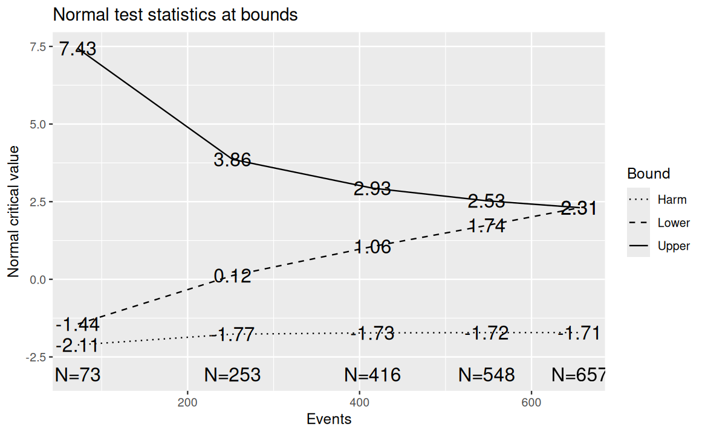
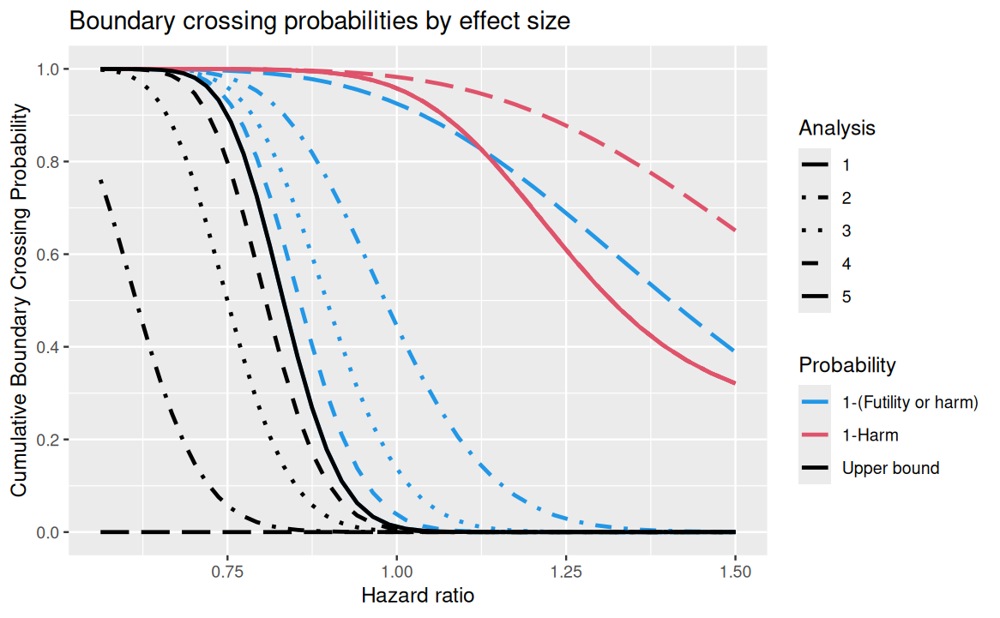
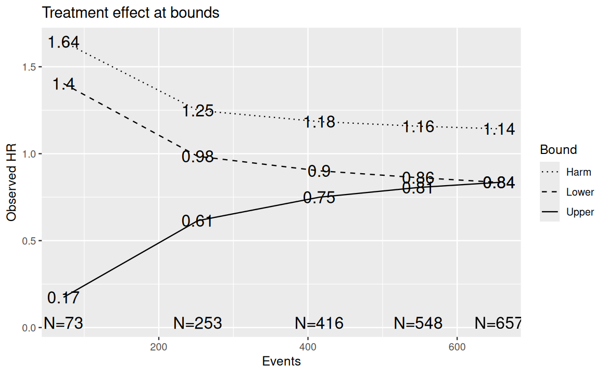
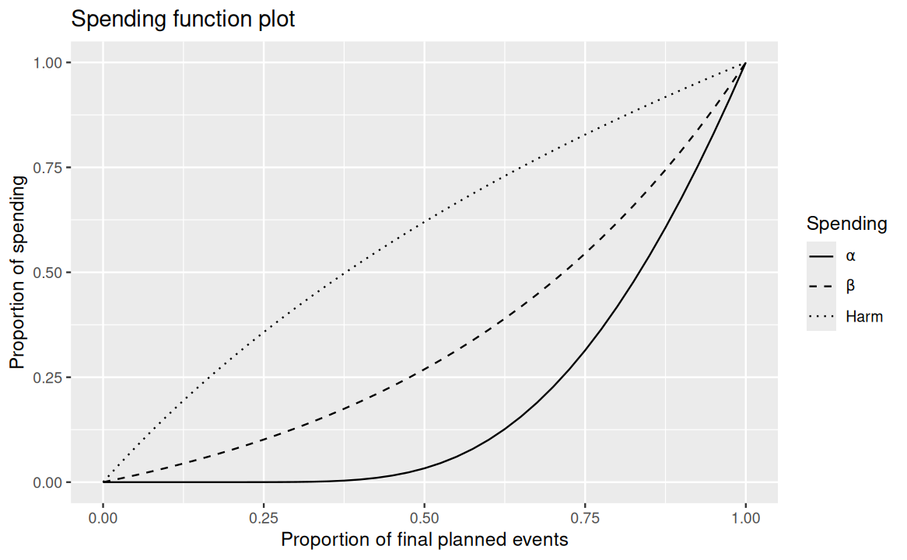
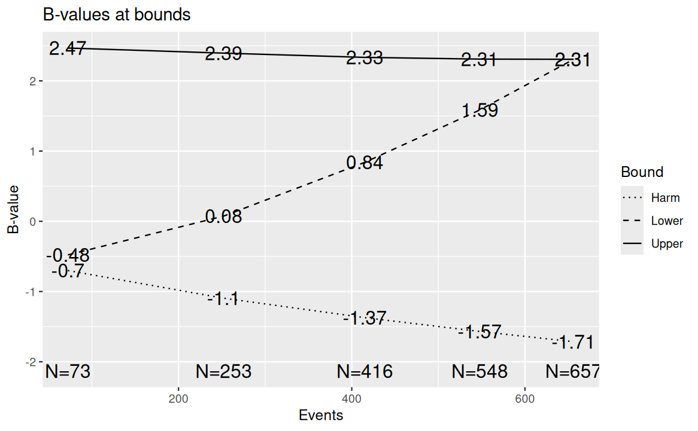

Futility and harm bounds for overall survival monitoring
Keaven Anderson
Source:vignettes/HarmBound.Rmd
HarmBound.RmdIntroduction
When clinical trials include overall survival (OS) as a secondary or
exploratory endpoint, regulators may recommend not only monitoring for
early evidence of efficacy and futility, but also for potential
harm — that is, evidence that the experimental treatment may be
worsening survival relative to control. This article
demonstrates how the gsDesign package supports group
sequential designs with three boundaries: an efficacy
(upper) bound, a futility (lower) bound, and a
harm bound, using test.type = 7 (binding)
and test.type = 8 (non-binding). For sparse mortality data
without a separate futility rule, the section Sparse-event mortality
monitoring uses test.type = 6 and exact binomial
boundary calculations.
Regulatory context: FDA guidance on OS monitoring in oncology
The August 2025 FDA draft guidance Approaches to Assessment of Overall Survival in Oncology Clinical Trials (U.S. Food and Drug Administration 2025) discusses OS as a safety endpoint even when another endpoint establishes efficacy. It remains draft, nonbinding guidance, not a requirement to use the method illustrated here. Sections II, III.A, and III.B.2 discuss:
- Indolent diseases and long survival, where demonstrating OS superiority may be impractical.
- Prespecified harm assessments, justified thresholds, sufficient events, and precision to assess clinically relevant mortality detriment.
- Event-driven interim analyses when appropriate, with independent data monitoring. Some small trials or trials with low event rates may not warrant interim OS analyses.
- The distinction between identifying a harm signal and ruling out an unacceptable degree of harm.
The guidance does not prescribe 0.1/Pocock spending or a separate futility boundary in every trial. Types 7 and 8 are useful when both futility and harm are wanted; type 6 can instead supply a non-binding harm bound alone on the lower side. The design and its assumptions require context-specific justification.
The harm bound implemented in gsDesign is a new method that is easy to use — a principled, straightforward extension of the widely used group sequential spending function framework. While we believe this approach is understandable, useful, and flexible, other methods for monitoring potential harm may also be considered. However, there are limitations with this approach. The first example has higher mortality risk than many cases. The later sparse-event example examines what the approach can and cannot establish when deaths are uncommon.
Design framework overview
In a standard two-sided asymmetric group sequential design
(test.type = 3 or 4), there are two
boundaries:
- Efficacy (upper) bound: Reject \(H_0\) if the test statistic exceeds this boundary (evidence of treatment benefit).
- Futility (lower) bound: Stop for futility if the test statistic falls below this boundary (insufficient evidence of treatment benefit).
The harm bound extension (test.type = 7 or
8) adds a third boundary:
- Harm bound: Signal that the experimental treatment may be harming patients (evidence of a detrimental effect).
The harm bound lies below the futility bound. At each analysis, there are four possible outcomes:
- Cross the efficacy bound (above): Stop for efficacy.
- Between the efficacy and futility bounds: Continue the trial.
- Cross the futility bound but not the harm bound (between futility and harm): Stop for futility.
- Cross the harm bound (below): Stop for harm.
The harm bound is intended to flag sufficiently small observed p-values favoring control. The nominal threshold depends on the analysis schedule and spending specification; it is not a fixed p-value cutoff at every look. That is, the harm bound flags evidence that the experimental treatment may be worsening survival — a negative treatment effect on the log hazard ratio scale.
Design with non-binding bounds (test.type = 8)
We demonstrate a survival design using gsSurvCalendar()
with test.type = 8 (non-binding futility and harm bounds).
The scenario is based on a 1:1 randomized trial monitoring overall
survival with:
- Median control survival: 3 years (36 months), i.e., \(\lambda_C = \log(2)/36\).
- Target hazard ratio: HR = 0.75 (25% reduction in hazard).
- Power: 90% (\(\beta = 0.1\)).
- One-sided \(\alpha\): 0.0125 (e.g., the OS component of a trial with multiplicity adjustment).
- Enrollment: Uniform enrollment over 18 months.
- Study duration: 5 years (60 months) with planned analyses at years 1, 2, 3, 4, and 5 from start of enrollment.
The astar parameter controls the total spending for the
harm bound under \(H_0\). The defaults
are astar = 0.1 (also selected by input
astar = 0) and sfharm = sfLDPocock. We specify
these explicitly below for clarity. The 10% target describes harm
crossing under \(H_0\) if
futility stopping is ignored, while still accounting for
earlier efficacy and harm stops. Actual harm stopping can be less
frequent when futility is followed. The existing cap that keeps harm at
or below an active futility boundary can also reduce the attainable
spending.
Spending function specification
We specify:
-
Efficacy bound: Lan-DeMets O’Brien-Fleming
(
sfLDOF) spending function (conservative, spending little \(\alpha\) at early analyses). - Futility bound: Hwang-Shih-DeCani (HSD) spending function with \(\gamma = -2\) (moderate \(\beta\)-spending under \(H_1\)).
-
Harm bound: Lan-DeMets Pocock
(
sfLDPocock) spending function (spending under \(H_0\) for detecting harm).
x8 <- gsSurvCalendar(
test.type = 8,
alpha = 0.0125,
beta = 0.1,
astar = 0.1,
calendarTime = c(12, 24, 36, 48, 60),
sfu = sfLDOF,
sfl = sfHSD, sflpar = -2,
sfharm = sfLDPocock,
lambdaC = log(2) / 36,
hr = 0.75,
R = 18,
minfup = 42
)Summary
The summary() method provides a concise description of
the design:
cat(strwrap(summary(x8), width = 65), sep = "\n")
#> Asymmetric two-sided group sequential design with non-binding
#> futility and harm bounds, 5 analyses, time-to-event outcome with
#> sample size 1148 and 657 events required, 90 percent power, 1.25
#> percent (1-sided) Type I error (sample size/power method:
#> Lachin-Foulkes) to detect a hazard ratio of 0.75. Enrollment and
#> total study durations are assumed to be 18 and 60 months,
#> respectively. Efficacy bounds derived using a Lan-DeMets
#> O'Brien-Fleming approximation spending function (no parameters).
#> Futility bounds derived using a Hwang-Shih-DeCani spending
#> function with gamma = -2. Harm bounds derived using a Lan-DeMets
#> Pocock approximation spending function.Detailed boundary table
The gsBoundSummary() function produces a tabular summary
with columns for each boundary. By default, B-value,
Spending, CP, CP H1, and
PP are excluded. We note that for the first interim
analysis, the efficacy bound is so extreme it is effectively impossible
to cross. However, the harm and futility bounds are more moderate,
allowing for early stopping if there is evidence of harm or futility.
The futility bound is an indicator of why bounds are often non-binding —
the futility bound is not intended to be a strict stopping rule, but
rather a signal that the trial may be unlikely to succeed if it
continues. Crossing the harm bound is a stronger indication that the
treatment may be harmful, and the trial should be at least paused with a
recommendation to review the safety and other endpoint data.
gsBoundSummary(x8) |> lt()Conditional power (CP, CP H1) and predictive power (PP) can also be included in the summary. Below we show the full table with all statistics, including conditional and predictive power at each boundary:
gsBoundSummary(x8, exclude = c()) |> lt()Interpreting the boundaries
The design has five analyses at calendar times of 12, 24, 36, 48, and 60 months. At each analysis, the test statistic (Z-value) is compared against three boundaries:
bounds <- data.frame(
Analysis = 1:x8$k,
Month = x8$T,
Events = ceiling(x8$n.I),
Harm = round(x8$harm$bound, 2),
Futility = round(x8$lower$bound, 2),
Efficacy = round(x8$upper$bound, 2)
)
bounds |>
lt() |>
lt_header("Z-value boundaries at each analysis")Decision rules at an analysis where all three bounds are active:
- If \(Z >\) efficacy bound: Stop for efficacy (reject \(H_0\)).
- If futility bound \(< Z \leq\) efficacy bound: Continue the trial.
- If harm bound \(< Z \leq\) futility bound: Stop for futility.
- If \(Z \leq\) harm bound: Stop for harm.
When both lower bounds are active, the harm bound is always at or below the futility bound. If futility is skipped but harm is tested, the harm bound is the sole active lower stopping boundary. The harm and futility bounds may coincide when the uncapped harm boundary would exceed the futility boundary; the cap can prevent full harm spending.
Boundary crossing probabilities
We examine the operating characteristics under two scenarios: no
treatment effect (HR = 1, i.e., under \(H_0\)) and the design alternative (HR =
0.75). When harm and futility are both active,
x8$lower$prob and x8$harm$prob are reported as
mutually exclusive stopping outcomes. Thus, the probability of crossing
the futility threshold is the sum of the two lower tail components.
probs <- data.frame(
Scenario = c(rep("Under H0 (HR=1)", x8$k), rep("Under H1 (HR=0.75)", x8$k)),
Analysis = rep(1:x8$k, 2),
Month = rep(x8$T, 2),
`P(Efficacy)` = c(cumsum(x8$upper$prob[, 1]), cumsum(x8$upper$prob[, 2])),
`P(Futility only)` = c(cumsum(x8$lower$prob[, 1]), cumsum(x8$lower$prob[, 2])),
`P(Harm)` = c(cumsum(x8$harm$prob[, 1]), cumsum(x8$harm$prob[, 2])),
`P(Futility or Harm)` = c(
cumsum(x8$lower$prob[, 1] + x8$harm$prob[, 1]),
cumsum(x8$lower$prob[, 2] + x8$harm$prob[, 2])
),
check.names = FALSE
)
probs |>
lt() |>
lt_format(columns = 2:7, decimals = 4) |>
lt_header("Cumulative boundary crossing probabilities")Under \(H_0\), the actual cumulative
probability of stopping for harm is approximately 0.0417 when all active
stopping rules are followed. This need not equal astar:
trials that stop for futility cannot subsequently stop for harm. The
cumulative probability of crossing the futility threshold, inclusive of
harm, is approximately 0.9888. Under \(H_1\) (HR = 0.75), crossing the harm bound
is very unlikely (4^{-4}), since the treatment is beneficial.
Harm calibration versus actual stopping
For both binding and non-binding designs, harm calibration ignores futility stopping. This avoids making a harm threshold near zero merely to spend a specified amount among the selected trials that survived earlier futility monitoring. Efficacy and earlier harm stopping are still included.
The following example tests harm at all three looks, skips efficacy at IA1, and tests futility only at IA1. It uses the new harm defaults. We compare the target spending, harm crossing without futility, and actual harm stopping:
xh <- gsDesign(
test.type = 8, timing = c(.5, .75),
testUpper = c(FALSE, TRUE, TRUE),
testLower = c(TRUE, FALSE, FALSE),
testHarm = TRUE
)
harm_without_futility <- gsProbability(
k = xh$k, theta = 0, n.I = xh$n.I,
a = xh$harm$bound, b = xh$upper$bound
)
data.frame(
Analysis = c("IA1", "IA2", "Final"),
`Harm Z` = xh$harm$bound,
`Nominal harm p` = pnorm(xh$harm$bound),
`Cumulative target` = cumsum(xh$harm$spend),
`Harm without futility` = cumsum(harm_without_futility$lower$prob[, 1]),
`Harm with futility` = cumsum(xh$harm$prob[, 1]),
check.names = FALSE
) |> lt() |> lt_format(columns = 2:6, decimals = 4)At IA2 the probability of an actual harm stop includes only paths that continued past IA1. Thus the cumulative harm probability is \(P_0(Z_1 \le h_1) + P_0(Z_1 > f_1, Z_2 \le h_2)\), where \(h_i\) denotes a harm boundary and \(f_1\) the IA1 futility boundary. Calibration without futility instead uses \(h_1\) in place of \(f_1\) in the second term.
gsBoundSummary() reports actual cumulative
stopping probabilities, not the hypothetical probabilities used
to calibrate harm spending. Its optional Spending rows
report the spending targets, so these two rows need not agree. Also, its
p (1-sided) rows use the efficacy direction; the nominal
p-value favoring harm is pnorm(xh$harm$bound), the
complement of that displayed p-value. print(xh) labels the
harm direction values as Nominal p.
Changing the example to test.type = 7 retains the same
harm calibration convention. Binding status changes efficacy
calibration: type 7 accounts for both lower stopping rules in protecting
alpha, whereas type 8 ignores them for that purpose. Power and actual
stopping probabilities include both rules in either design. Ignoring a
binding futility rule in practice can inflate efficacy Type I error,
even though it was ignored for harm calibration.
Visualization
All standard plot() types are supported for
test.type = 7 and 8 designs, with a third line
(or set of lines) shown for the harm bound.
Z-value boundaries
The default plot shows Z-value boundaries at each analysis. Three boundaries are displayed: efficacy (upper), futility (lower), and harm (below futility).
plot(x8)
Z-value boundaries for non-binding harm bound design
Boundary crossing probabilities
The power plot (plottype = 2) shows cumulative boundary
crossing probabilities as a function of the treatment effect. Three sets
of lines appear: upper bound (cumulative efficacy crossing probability),
1-(Futility or harm), and 1-Harm. Because the
harm boundary is nested below the futility boundary when both are
active, crossing the futility threshold includes both futility-only and
harm stops. The 1-(Futility or harm) curve therefore
subtracts x8$lower$prob + x8$harm$prob, while the
1-Harm curve subtracts harm crossings only. This
aggregation is performed only for plotting: the probability arrays
stored in x8 remain mutually exclusive so that efficacy,
futility-only, and harm outcomes add without double counting. When the
underlying treatment effect favors control, the high probability of
crossing the harm bound indicates that the harm bound is sensitive and
serves its intended purpose.
plot(x8, plottype = 2)
Boundary crossing probabilities for non-binding harm bound design
Approximate treatment effect at boundaries
The effect size plot (plottype = 3) shows the
approximate treatment effect at each boundary. For survival designs,
this is expressed as the approximate hazard ratio at the boundary.
plot(x8, plottype = 3)
Approximate treatment effect at boundaries
Conditional power at boundaries
Conditional power (plottype = 4) at each interim
analysis is shown for all three boundaries. This is generally not a very
useful plot.
plot(x8, plottype = 4)
Conditional power at boundaries
Spending function plot
The spending function plot (plottype = 5) shows the
three spending functions: \(\alpha\)
(efficacy), \(\beta\) (futility), and
harm.
plot(x8, plottype = 5)Spending functions for non-binding harm bound design
B-values at boundaries
B-values (plottype = 7) are Z-values scaled by \(\sqrt{t}\) where \(t\) is the information fraction. As
discussed by Proschan et al. (2006), the
expected value of B-values increases linearly with the information
fraction under the assumption of a constant treatment effect
(proportional hazards). This linear relationship makes B-values useful
for visual assessment of treatment effect trends across interim
analyses: departures from linearity may suggest non-proportional hazards
or other changes in treatment effect over time. Three boundary lines are
shown: efficacy, futility, and harm.
plot(x8, plottype = 7)
B-values at boundaries
Design with binding bounds (test.type = 7)
For test.type = 7, both the futility and harm bounds are
binding — meaning the computation of the efficacy bound
assumes the trial will stop if either bound is crossed. This
yields a slightly less conservative efficacy bound (easier to cross),
but at the cost of inflated Type I error if the stopping rule is not
strictly followed.
We first create a binding design with \(\alpha = 0.0125\) to compare with the non-binding design above:
x7 <- gsSurvCalendar(
test.type = 7,
alpha = 0.0125,
beta = 0.1,
astar = 0.1,
calendarTime = c(12, 24, 36, 48, 60),
sfu = sfLDOF,
sfl = sfHSD, sflpar = -2,
sfharm = sfLDPocock,
lambdaC = log(2) / 36,
hr = 0.75,
R = 18,
minfup = 42
)Comparing binding and non-binding
comparison <- data.frame(
Bound = c("Efficacy", "Futility", "Harm"),
`Binding (type 7)` = c(
paste(round(x7$upper$bound, 3), collapse = ", "),
paste(round(x7$lower$bound, 3), collapse = ", "),
paste(round(x7$harm$bound, 3), collapse = ", ")
),
`Non-binding (type 8)` = c(
paste(round(x8$upper$bound, 3), collapse = ", "),
paste(round(x8$lower$bound, 3), collapse = ", "),
paste(round(x8$harm$bound, 3), collapse = ", ")
),
check.names = FALSE
)
comparison |>
lt() |>
lt_header("Comparison of binding vs. non-binding Z-value boundaries")Note that the efficacy bounds for test.type = 7
(binding) are slightly lower (easier to cross) than for
test.type = 8 (non-binding). The maximum number of events
for test.type = 7 (639) is also slightly smaller than for
test.type = 8 (657), reflecting the assumption that the
trial will stop at the lower bounds.
gsBoundSummary(x7) |> lt()Efficacy bounds at alternate \(\alpha\) levels
The gsBoundSummary() function accepts an
alpha argument to display efficacy bounds at one or more
alternate \(\alpha\) levels alongside
the original design. Each alternate alpha column retains the
testUpper schedule from the design, so an efficacy analysis
that was skipped remains inactive and every efficacy characteristic at
that analysis, including cumulative crossing probability, is
NA. Here we show the non-binding design (x8)
with efficacy bounds for both \(\alpha =
0.0125\) (the design level) and \(\alpha = 0.025\):
gsBoundSummary(x8, alpha = 0.025) |> lt()Alternate alpha summaries are supported for
test.type = 8, where both futility and harm bounds are
non-binding. They are not supported for test.type = 7: a
binding harm or futility bound is outside the non-binding sequential
p-value framework used for Maurer–Bretz graphical multiple testing.
Sparse-event mortality monitoring
A harm bound without a separate futility bound
Consider a randomized trial with a primary efficacy endpoint other than OS, such as progression-free survival, and relatively few expected deaths. A prespecified mortality harm signal can be useful without requiring a separate rule for stopping because OS benefit appears unlikely. This is a hypothetical illustration, not an FDA-specified disease scenario or recommended protocol.
Use test.type = 6: its lower Z-bound spends under the
null hypothesis and is non-binding for efficacy Type I
error. Here we interpret that lower bound as harm; there is no
additional beta spending futility bound. For type 6 the inputs are
astar = 0.1 and sfl = sfLDPocock,
not sfharm. They must be supplied
explicitly: type 6 retains its general-purpose defaults of
astar = 1 - alpha (selected by input 0) and HSD lower
spending. The lower boundary is stored in lower, even if a
generic summary labels it as futility. Its clinical interpretation in
this example is harm.
We plan analyses at 6, 23, and 40 total deaths, with 1:1
randomization, enrollment of 100 participants per month for 16 months,
no dropout, and a constant control mortality hazard of 0.001 per month.
An HR of 0.8 is used only as a planning scenario for the expected timing
and power, not as evidence of mortality benefit.
gsSurvPower() evaluates this fixed event schedule; it does
not increase the event target to obtain 90% OS power.
sparse <- gsSurvPower(
k = 3, test.type = 6,
alpha = .025, sided = 1,
astar = .1, sfl = sfLDPocock,
targetEvents = c(6, 23, 40),
lambdaC = .001, hr = .8, hr0 = 1,
gamma = 100, R = 16, ratio = 1, eta = 0
)
# Use the planned final event count as the explicit spending denominator.
event_fraction <- sparse$n.I / tail(sparse$n.I, 1)
sparse_exact <- toBinomialExact(
sparse, usTime = event_fraction, lsTime = event_fraction
)The example retains an OS efficacy boundary to illustrate non-binding harm monitoring alongside an alpha-controlled efficacy test. It does not allocate alpha to another primary endpoint or supply a multiple endpoint testing strategy. If OS is solely a safety endpoint, the efficacy stopping rules and operating characteristics should be specified accordingly rather than claiming an OS efficacy objective that the trial does not have.
Integer death count boundaries
In the exact binomial representation the direction reverses: a high
count of experimental arm deaths signals harm. upper$bound
is therefore the harm cutoff, while lower$bound is the
efficacy cutoff. The probabilities account for stopping at any earlier
active boundary.
data.frame(
`Total deaths` = sparse_exact$n.I,
`Experimental deaths for harm (at least)` = sparse_exact$upper$bound,
`Cumulative harm probability under HR=1` =
cumsum(sparse_exact$upper$prob[, 1]),
check.names = FALSE
) |> lt() |> lt_format(columns = 3, decimals = 4)
# Efficacy Type I error is evaluated ignoring the non-binding harm boundary.
efficacy_without_harm <- gsBinomialExact(
k = sparse_exact$k, theta = .5, n.I = sparse_exact$n.I,
a = sparse_exact$lower$bound, b = sparse_exact$n.I + 1L
)
stopifnot(sum(efficacy_without_harm$lower$prob) <= sparse$alpha + 1e-10)At the first look, a signal requires all six deaths to be in the experimental arm. At later looks the cumulative cutoff is applied only if no earlier stopping boundary has been crossed. The total null harm crossing probability is 7.8%, below the 10% target because only integer death counts are available. The efficacy Type I error without harm stopping is 1.96%, below 2.5%.
Sensitivity to excess mortality
For balanced exposure and uncommon events, approximate the probability that a death is in the experimental arm by \(p = HR/(1 + HR)\), where \(HR = \lambda_E/\lambda_C\). More generally the corresponding conditional Poisson model uses \(p = HR\,r/(1 + HR\,r)\) with exposure ratio \(r\). The recursion below is exact for independent binomial event increments with constant \(p\), not automatically exact for arbitrary censored survival data. Risk set imbalance, differential censoring, or changing hazards can invalidate the simple mapping from randomization ratio and HR. Such settings need appropriate survival model calculations or simulation.
harm_hr <- c(1, 1.25, 1.5, 2)
harm_oc <- gsBinomialExact(
k = sparse_exact$k, theta = harm_hr / (1 + harm_hr),
n.I = sparse_exact$n.I,
a = sparse_exact$lower$bound, b = sparse_exact$upper$bound
)
data.frame(
`True mortality HR` = harm_hr,
`Probability of a harm signal` = colSums(harm_oc$upper$prob),
check.names = FALSE
) |> lt() |> lt_format(columns = 2, decimals = 3)Even at HR = 1.5, the chance of a signal is only 38.8% in this example. Failure to cross the boundary therefore cannot establish that a clinically important mortality increase has been excluded. Increasing harm spending can improve sensitivity, but also increases false signals; it cannot replace information from additional deaths and follow-up. A non-binding designation concerns efficacy alpha calculations, not the clinical importance of reviewing a signal.
Detecting harm versus ruling out harm
A harm monitoring test asks whether data provide evidence of excess mortality relative to HR = 1. A reassurance objective instead asks whether the data can exclude a prespecified unacceptable HR, such as 1.5. The latter value is an illustration, not a universal safety margin. One approach is to require an appropriately constructed upper confidence bound to fall below that margin.
To illustrate the lack of precision, suppose a single fixed analysis has 20 deaths in each arm. Under the same binomial model, transform a one-sided 95% upper bound for the experimental share into an upper HR bound:
p_upper <- binom.test(20, 40, alternative = "less", conf.level = .95)$conf.int[2]
hr_upper <- p_upper / (1 - p_upper)
data.frame(
`Experimental deaths` = 20, `Control deaths` = 20,
`One-sided 95% upper HR bound` = hr_upper,
check.names = FALSE
) |> lt() |> lt_format(columns = 3, decimals = 2)Despite a balanced observed count, this upper bound exceeds 1.5. This is a fixed analysis precision illustration, not a sequentially adjusted interval for the monitored trial. Repeated or stopping-selected reassurance assessments require an interval or test valid for that monitoring plan. A vignette example must not turn “no harm signal” into a claim of safety: the harm margin, precision, event target, follow-up, and operating characteristics for ruling out harm all need their own justification.
Practical considerations
Choice of spending functions
The choice of spending functions for the three boundaries should reflect regulatory and scientific considerations:
-
Efficacy: A conservative spending function such as
Lan-DeMets O’Brien-Fleming (
sfLDOF) is typical, spending very little \(\alpha\) at early interim analyses when limited information is available. - Futility: Moderate spending (e.g., HSD with \(\gamma = -2\)) allows early stopping for futility when the treatment effect is clearly absent.
-
Harm: The Lan-DeMets Pocock
(
sfLDPocock) spending function provides more aggressive spending at early analyses, which is appropriate for harm monitoring since detecting a detrimental effect early is critical for patient safety.
Total harm spending and the number of analyses
Lan–DeMets Pocock spending with total 0.1 allocates cumulative probability \(A(t) = 0.1\log\{1 + (e-1)t\}\) by spending time \(t\). It allocates relatively more spending early than a conservative O’Brien–Fleming choice, helping to flag moderately small nominal p-values favoring harm throughout monitoring. The total 0.1 is a repeated monitoring probability under the null, not a nominal 0.1 cutoff at every analysis. Neither the total nor the spending function guarantees that any particular nominal p-value will trigger harm stopping at every look.
With more analyses, a user may wish to choose a larger total
harm spending (astar) to retain similarly
permissive nominal thresholds. This increases the allowed probability of
a false harm signal under the null. It does not mean increasing futility
spending (beta), which has a different purpose and is
calibrated under the design alternative. Inspect the actual thresholds
for the intended timing and number of analyses. For example:
harm_nominal <- function(k, astar) {
d <- gsDesign(k = k, test.type = 8, astar = astar)
data.frame(
Analyses = k, Total = astar, Look = seq_len(k),
`Nominal harm p` = pnorm(d$harm$bound), check.names = FALSE
)
}
rbind(harm_nominal(3, .1), harm_nominal(6, .1), harm_nominal(6, .2)) |>
lt() |> lt_format(columns = 4, decimals = 4)The larger total in this illustration is a sensitivity analysis, not a universal recommendation. The choice requires considering both sensitivity to potential harm and false harm signals.
Interpreting the harm bound
The harm bound is crossed when the observed p-value favoring control is at or below the analysis-specific nominal harm threshold. In terms of the test statistic, a negative Z-value indicates that the hazard rate is higher in the experimental arm than the control arm — i.e., the experimental treatment appears to be worsening survival. When the Z-value falls below the harm bound, this constitutes a statistical signal that the treatment may be harmful, and the trial should be stopped with a recommendation to review the safety data.
The harm spending is computed under \(H_0\) (no treatment effect), ignoring futility stopping but retaining efficacy stopping. It budgets the probability of a false harm signal under those assumptions; following futility can reduce the actual probability further.
Harm bound capping
In the implementation, the harm bound is automatically capped so it never exceeds the futility bound when both are active. This ensures the ordering harm bound \(\leq\) futility bound \(\leq\) efficacy bound at analyses where all three are tested, while allowing harm to be the active lower boundary when futility is skipped.
When to use test.type = 7
vs. test.type = 8
-
test.type = 8(non-binding) is most often preferred in practice. Regulators will generally expect non-binding bounds, which preserve Type I error control regardless of whether the stopping rules are strictly followed. Since Data Monitoring Committees (DMCs) typically retain discretion to continue or stop a trial based on the totality of the evidence, the non-binding approach ensures that the statistical validity of the efficacy analysis is maintained even if a futility or harm boundary is crossed but the trial continues. -
test.type = 7(binding) is appropriate when there is a firm commitment to stop the trial upon crossing any boundary. This provides a small efficiency gain (slightly easier efficacy bounds and fewer required events) but requires strict protocol adherence. If the trial does not stop after crossing a binding boundary, Type I error may be inflated.
In most regulatory settings, test.type = 8 is the safer
and more common choice.
Binding and non-binding harm monitoring
When futility and harm are both tested at an analysis, the harm boundary lies below the futility boundary and therefore does not add another stopping region. Crossing probabilities are nevertheless partitioned into mutually exclusive harm, futility, and efficacy outcomes.
When harm is tested at an analysis where futility is skipped, the
harm boundary is the active lower stopping boundary. This stopping
probability is included in sample size derivation and, for
test.type = 7, in the binding efficacy bound calculation.
For test.type = 8, efficacy bounds continue to use the
non-binding Type I error convention, while power and expected
information account for actual harm and futility stopping.
Adjusting the boundaries
The boundaries are adjustable through several design parameters:
-
Alternate
astar: Controls the Type I error allocated to excess OS harm detection. - Alternate spending functions: Different spending functions for efficacy, futility, and harm boundaries change the aggressiveness of each boundary across analyses.
- Alternate timing of analyses: Changing the calendar times of interim analyses shifts the information available at each look.
Regardless of the statistical design, bounds must be clinically, ethically, and statistically sound. As previously noted, this approach is one option to address the regulatory expectation for OS harm monitoring, but other approaches may also be considered.